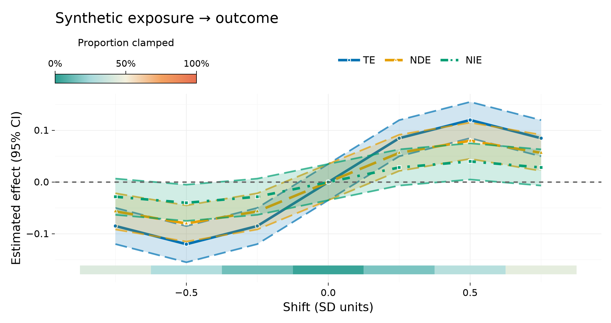

API overview
Literature mapping lives in Methods; DOIs in References. Docstrings on the symbols below also carry # References sections.
Small-n profile
recommend_folds·recommend_run_options·recommend_learnersSMALL_N_SL_LEARNERS·adaptive_learners·warn_if_folds_too_large
LMTP and policies
run_lmtp_grid·lmtp_tmle_contrast·ShiftPolicyplot_mtp_curve·mtp_curve!·has_makieadditive_shift_policy·multiplicative_shift_policy·threshold_shift_policySequentialPolicy·run_sequential_lmtp·sequential_identification_certificateSurvivalPolicy·run_survival_lmtp·survival_identification_certificatebuild_lmtp_fold_cache
Mediation
run_mediation_grid·run_mediation_scalarmediation_n_mc_sweep·mediation_stability_summary·mediation_stability_markdownbuild_mediation_fold_cache·MediationFoldCache- Soft-deprecated aliases (emit
DeprecationWarning):run_crumble_grid,run_crumble_scalar,build_crumble_fold_cache,CrumbleFoldCache,run_crumble_scalar_ppl - Prefer:
run_mediation_grid·run_mediation_scalar·run_mediation_scalar_ppl·MediationFoldCache
Positivity and sensitivity
positivity_report·positivity_markdown·attach_positivity_summary!tipping_point_bias·partial_r2_calibration·sensitivity_report·sensitivity_markdownadjustment_set_disagreement·discovery_adjustment_sensitivity·merge_discovery_sensitivity!
Super Learner
fit_super_learner·predict_super_learner·SuperLearnerFit·nested_sl_candidatedesign_matrix- Libraries:
DEFAULT_SL_LEARNERS,RICH_SL_LEARNERS(includes:randomforest),SMALL_N_SL_LEARNERS; opt-in trees:randomforest/:xgboostafter loadingMLJDecisionTreeInterface/MLJXGBoostInterface(see Methods) - Metalearners:
:nnls(default for gaussian; Rmethod.NNLS),:nnloglik(default for binomial; Rmethod.NNloglik),:cv_selector(discrete Super Learner; alias:winner),:invmse. Deprecated::discretecurrently aliases:nnls. family=:multinomialreturns ann × Ksimplex frompredict_super_learner.- Categorical treatment:
DiscreteTreatmentPolicy/run_discrete_lmtp(T=1) andSequentialPolicypolicies(multi-time factor recodes). Classification density ratios; TMLE.jl keeps static point-treatment ATE.
Categorical adjustment variables are handled automatically by CausalTargeted's g-computation, LMTP (Gaussian, classification, and hybrid density ratios), LMTP fold-cache, sequential LMTP, survival LMTP, and missing-data nuisance pathways. Numeric, Bool, String, and explicit categorical-array columns may be passed without manual dummy coding. A stable internal numeric representation is fitted on the cleaned analysis data and reused across folds. Integer columns are numeric unless explicitly converted to categorical. Continuous MTP (ShiftPolicy / run_lmtp_grid) still requires a numeric exposure. Finite-support treatments use DiscreteTreatmentPolicy / run_discrete_lmtp (T=1) or SequentialPolicy policies (multi-time). Mixed continuous/discrete sequential A_t is rejected.
CausalMediation mediation grids reuse the same fold-stable schema for mixed baseline types.
Planning and certificates
plan_mtp·summarise_plan·execute_estimand·estimand_from_queryidentification_certificate·certificate_dictbuild_run_metadata·attach_run_metadata!
CausalTargeted.CausalTargeted — Module
CausalTargetedCross-fitted targeted inference: LMTP, interventional mediation EIF, nuisance caching, and grid execution. Identification is delegated to CausalDynamics.jl.
Small-n profiles, positivity atlases, and sensitivity helpers target conservation and other low-sample causal applications.
Documentation
- Methods ↔ literature:
docs/src/methods.md - Full bibliography (DOIs / BibTeX keys):
docs/src/references.md - Small-n checklist:
docs/src/small_n.md
Canonical papers: Díaz et al. (2023) LMTP; Díaz & Hejazi (2020) / Liu et al. (2024) mediation; van der Laan & Rose (2011) TMLE; Cinelli & Hazlett (2020) sensitivity.
CausalTargeted.recommend_run_options — Function
recommend_run_options(n; engine, n_mediators, rich) -> NamedTupleKwargs suitable for run_lmtp_grid / run_mediation_grid / execute_estimand under a small-n-first policy.
| n | folds | learners | density_ratio | n_mc (mediation) | parallel |
|---|---|---|---|---|---|
| < 40 | 2 | small | gaussian | 64–128 | false |
| 40–79 | 3 | default | gaussian | 64 | false |
| ≥ 80 | 3–5 | default/rich | hybrid if rich | 32–64 | false* |
* Parallel remains off by default for memory safety; set parallel=true explicitly.
CausalTargeted.run_lmtp_grid — Function
run_lmtp_grid(data, trt, outcome; baseline, kwargs...) -> DataFrameCross-fitted SuperLearner LMTP TMLE grid matching R run_lmtp_grid() (shift_scale = "z").
Uses clamp-aware hybrid targeting: when many observations hit clamp bounds, the TMLE fluctuation is down-weighted toward g-computation.
Defaults:
density_ratio = :gaussian(stable at sheep n; use:hybrid/:classificationfor large n)cv_trunc = true(select hard truncation among candidates)estimator = :tmle(score-solving; pass:sdr/:eif/:itmleas needed)epochs = 1(do not inherit mediation-gridepochs=30)simultaneous = trueadds multiplier-bootstrap simultaneous bandsparallel = truewhenThreads.nthreads() > 1cache_nuisances = truereuses fold outcome / exposure models across δ
CausalTargeted.run_mediation_grid — Function
run_mediation_grid(args...; kwargs...)Deprecated façade — prefer CausalMediation.run_mediation_grid.
CausalTargeted.positivity_report — Function
positivity_report(data, trt; deltas, stratify_by, lower_q, upper_q, shift_scale, kwargs...) -> DataFrameTidy atlas of support / clamp diagnostics across the δ-grid and strata.
Uses support_diagnostics and additive_clamp_diagnostics. Statuses: ok, weak_support, unsupported_shift.
CausalTargeted.sensitivity_report — Function
sensitivity_report(est, se; n, alpha, r2_grid) -> DataFrameOne-row tipping point plus a small grid of partial-R² calibrations.
CausalTargeted.SequentialPolicy — Type
SequentialPolicy(treatments, outcome, baseline; time_vary, shift, policies)Time-ordered treatments A_1,…,A_T, baseline covariates L_0, and optional time-varying covariates time_vary[t] observed before A_t.
Empty policies selects the numeric additive-shift path. A nonempty vector of DiscreteTreatmentPolicy (length T, or length 1 broadcast to every time) selects dummy-coded factor recodes. Mixed continuous and categorical A_t is not supported.
CausalTargeted.estimand_from_query — Function
estimand_from_query(query::CausalQuery, adjustment; mediators, shift, policies, treatments, time_vary) -> EstimandMap a CausalDynamics query to a typed estimand.
TotalEffectQuery→InterventionalMeanMediationQuery→MediationContrastInterventionalPolicyQuery→DiscreteInterventionalMeanwhenquery.shiftorpoliciesis aDiscreteTreatmentPolicy; otherwiseInterventionalMeanTemporalEffectQuery→LongitudinalPolicyby default (single lagged column). Pass nonemptypoliciesand widetreatments(:A1,:A2, …) forSequentialPolicy.
CausalTargeted.nested_sl_candidate — Function
nested_sl_candidate(learners; name=:esl, metalearner=:nnls) -> NestedSLCandidateBuild a nested ensemble candidate for metalearner=:cv_selector.
MTP effect curves
These functions visualise effects that have already been estimated; they do not fit an MTP estimator or identify a causal effect. Interval columns can be pointwise or simultaneous bands. Set ylabel to describe the intervals passed to the function whenever the default "Estimated effect (95% CI)" is not accurate.
Loading CairoMakie activates both the vector API and the DataFrame convenience interface:
CausalTargeted.has_makie — Function
has_makie() -> BoolReturn true when the optional CausalTargetedMakieExt plotting extension is loaded. Loading a Makie backend such as CairoMakie loads Makie and activates the extension.
CausalTargeted.mtp_curve! — Function
mtp_curve!(ax, shift, estimate, lower, upper;
clamp=nothing, estimand=nothing, panel_mode=false,
ribbon_alpha=0.18, strip_gap_fraction=0.020,
strip_height_fraction=0.055)Draw already-estimated modified-treatment-policy (MTP) effects into an existing Makie Axis. This function performs no causal estimation.
The four required vectors contain shift values, point estimates, and lower and upper interval limits. estimand may contain TE, NDE, and NIE labels and defaults to TE for every row. clamp contains optional proportions clamped by the treatment policy; finite values are squished to [0, 1]. Missing or non-finite clamp values are omitted. Required numeric values must be finite, lower <= upper, and all vectors must have equal lengths.
Rows are copied and sorted by shift within the stable estimand order TE, NDE, NIE. Clamp values repeated across estimands must agree at each shift. The returned named tuple contains plot handles plus series and clamp_geometry metadata, making the result composable and inspectable without mutating inputs.
Keywords
panel_mode=false: use compact line and marker sizes suitable for a manually composed faceted layout whentrue.ribbon_alpha=0.18: interval-ribbon opacity.strip_gap_fraction=0.020: gap below the effect range as a fraction of its y span.strip_height_fraction=0.055: clamp-strip height as a fraction of its y span.
CausalTargeted.plot_mtp_curve — Function
plot_mtp_curve(shift, estimate, lower, upper;
clamp=nothing, estimand=nothing, title=nothing,
xlabel="Shift (SD units)", ylabel="Estimated effect (95% CI)",
figure_size=(8.5, 4.5), base_size=12,
ribbon_alpha=0.18, strip_gap_fraction=0.020,
strip_height_fraction=0.055) -> Figure, AxisCreate one complete Makie MTP effect-curve figure and return (figure, axis). The function visualises supplied estimates and intervals; it does not estimate causal effects. Intervals may be pointwise or simultaneous—the configurable ylabel should describe whichever interval the caller supplied.
figure_size is measured in inches. The default physical canvas is 8.5 × 4.5 inches, represented internally at 120 Makie layout units per inch. title is left aligned. The remaining data and strip keywords have the same meaning and validation as mtp_curve!. If no finite clamp values are supplied, the clamp strip and colourbar are omitted. Only estimands present in the data appear in the top legend, ordered TE, NDE, NIE.
Export at exact physical size
For a returned fig, PDF uses pt_per_unit = 72 / 120; 320-dpi PNG uses px_per_unit = 320 / 120:
save("mtp_curve.pdf", fig; pt_per_unit = 72 / 120)
save("mtp_curve.png", fig; px_per_unit = 320 / 120)plot_mtp_curve(df;
shift=:delta, estimate=:est, lower=:lwr, upper=:upr,
clamp=:clamp, estimand=:estimand, kwargs...) -> Figure, AxisDataFrame convenience interface for plot_mtp_curve. Its defaults match the output of run_lmtp_grid, so plot_mtp_curve(grid) works directly. Required column selectors are shift, estimate, lower, and upper. The estimand column is optional and defaults to TE when absent or when estimand=nothing; the optional clamp column is similarly ignored when absent or disabled. A single error lists every missing required column. Column vectors are never mutated.
Load a Makie backend such as CairoMakie to activate this method. Other keywords, including title, xlabel, ylabel, and figure_size, are forwarded to the vector API. To plot simultaneous bands returned by run_lmtp_grid, pass lower=:lwr_sim, upper=:upr_sim, and an appropriate ylabel.
The DataFrame defaults match run_lmtp_grid, including the optional clamp strip:
using CausalTargeted, CairoMakie
grid = run_lmtp_grid(data, :A, :Y; baseline = [:W])
fig, ax = plot_mtp_curve(grid; title = "Exposure → outcome")For simultaneous intervals produced by the grid estimator, select those columns and label them explicitly:
fig, ax = plot_mtp_curve(
grid;
lower = :lwr_sim,
upper = :upr_sim,
ylabel = "Estimated effect (simultaneous 95% band)",
)Synthetic TE/NDE/NIE example
using CausalTargeted, CairoMakie, DataFrames
shifts = [-0.75, -0.5, -0.25, 0.0, 0.25, 0.5, 0.75]
estimands = ["TE", "NDE", "NIE"]
df = DataFrame(
delta = repeat(shifts, length(estimands)),
estimand = repeat(estimands; inner = length(shifts)),
)
scale = Dict("TE" => 0.12, "NDE" => 0.08, "NIE" => 0.04)
df.est = [scale[e] * sinpi(x) for (x, e) in zip(df.delta, df.estimand)]
df.lwr = df.est .- 0.035
df.upr = df.est .+ 0.035
df.clamp = repeat([0.42, 0.28, 0.14, 0.03, 0.16, 0.30, 0.45], length(estimands))
fig, ax = plot_mtp_curve(df; title = "Synthetic exposure → outcome")
fig
For custom multi-panel layouts, create ordinary Makie axes and compose the curve-level primitive directly:
panel = Figure()
ax = Axis(panel[1, 1]; title = "Panel A")
handles = mtp_curve!(ax, delta, estimate, lower, upper; clamp, estimand)The default canvas uses 120 Makie layout units per inch. Save the exact 8.5 × 4.5 inch curve as PDF or 320-dpi PNG with:
save("mtp.pdf", fig; pt_per_unit = 72 / 120)
save("mtp.png", fig; px_per_unit = 320 / 120)